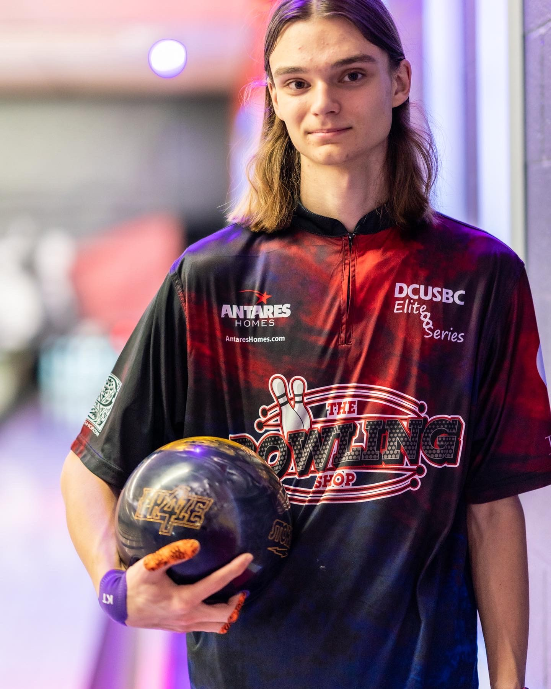

About
Henry Morin is a sophomore in software engineering at Rose-Hulman Institute of Technology. When it comes to software engineering, he has been programming since 10 years old when he got his first computer. He has made and contributed to a lot of projects along with his friends and has competed with his high schools competitive programming team. He has specific interests in game development and creating utility focused user interfaces.
Outside of software engineering, Henry is known for having so many interests. Including but not limited to audio engineering, bowling, drone racing, electronic repair, and film photography. He has founded a high school club based around designing and building musical synthesizers and is currently participating in Rose-Hulman's Bowling and WMHD radio clubs.